Suzma
Traditional Uzbek salty cream cheese.
12 000 UZS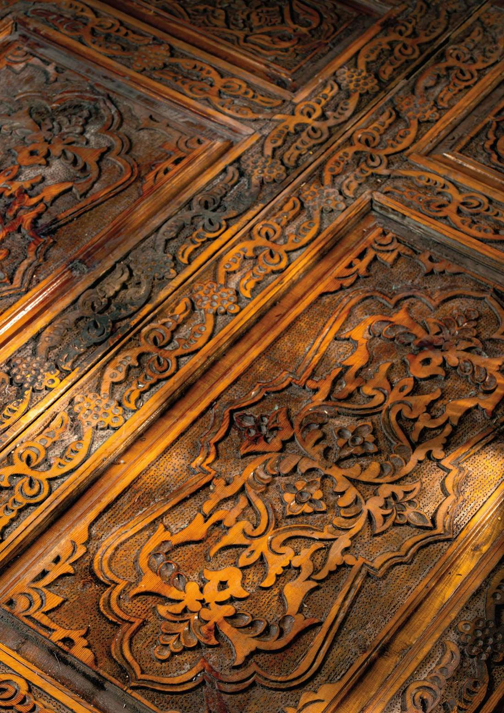
OSH BIRLASHTIRADI!
Kamolon — a house of traditional Uzbek hospitality, five regional pilaf styles, and authentic flavors from Samarkand to the teahouses of the East.
Explore the PilafEvery dish on this menu carries a piece of Uzbek tradition — from the carved wooden tables of a chaykhana to the ceremonial cauldrons of a wedding feast. All prices are listed in Uzbekistani Som (UZS). A 15% service charge applies to all orders.
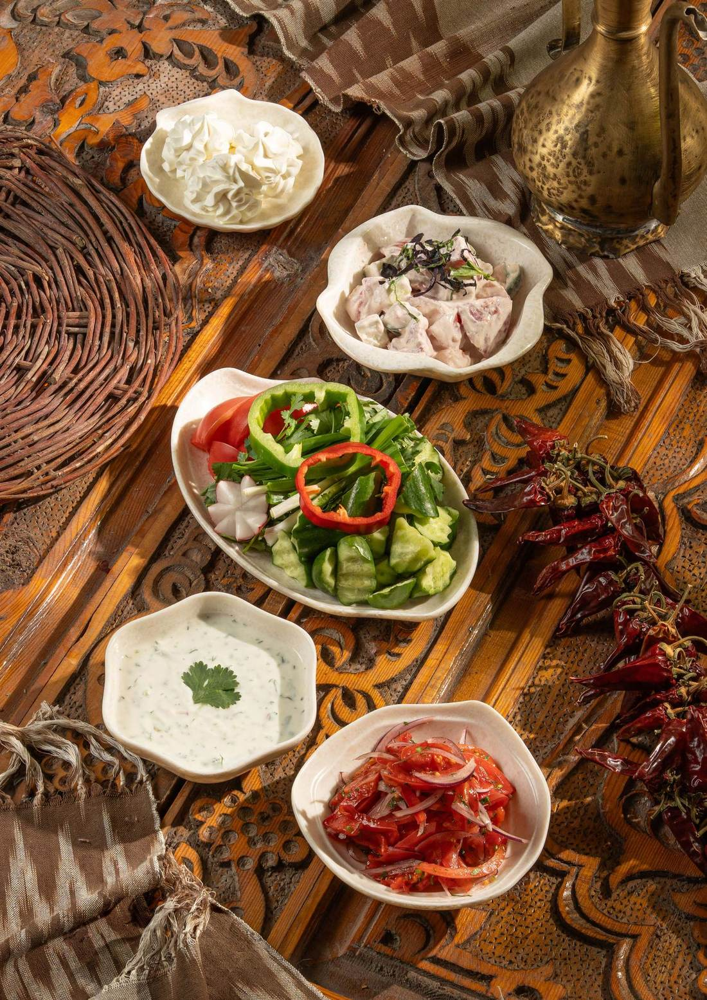
Traditional Uzbek salty cream cheese.
12 000 UZSFresh tomatoes, cucumbers, onions, and creamy suzma cheese with delicate herbs.
22 000 UZSA traditional Uzbek selection of seasonal fresh vegetables and herbs.
22 000 UZSFresh tomatoes, onions, cucumbers and herbs — the most famous Uzbek tomato salad.
16 000 UZSCucumbers, coriander, yogurt, and cumin.
16 000 UZS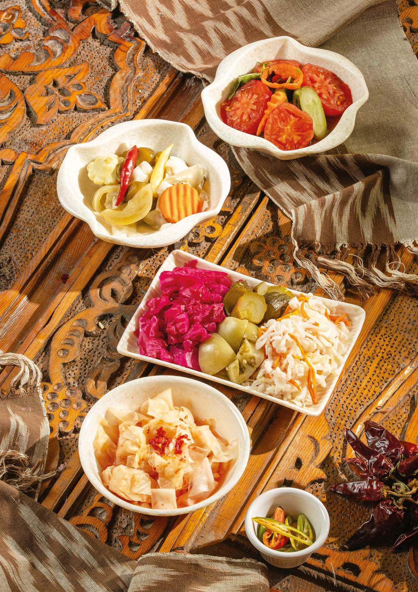
Lightly pickled tomatoes, cucumbers, carrots, and peppers. Fresh, crunchy, and lightly seasoned.
18 000 UZSTraditional Uzbek-style assorted pickled vegetables.
16 000 UZSSelection of homemade Uzbek pickles: cucumbers, tomatoes, cabbage, peppers, and carrots.
16 000 UZSSpicy pickled cabbage with rich fermented flavor.
10 000 UZSHot one.
3 000 UZSPickled cucumbers, tomatoes, and green peppers.
15 000 UZSTomatoes and cucumbers, in homemade tomato juice.
16 000 UZSA special one, available only in Central Asia.
10 000 UZSFresh green radish, crisp and mildly sweet.
8 000 UZS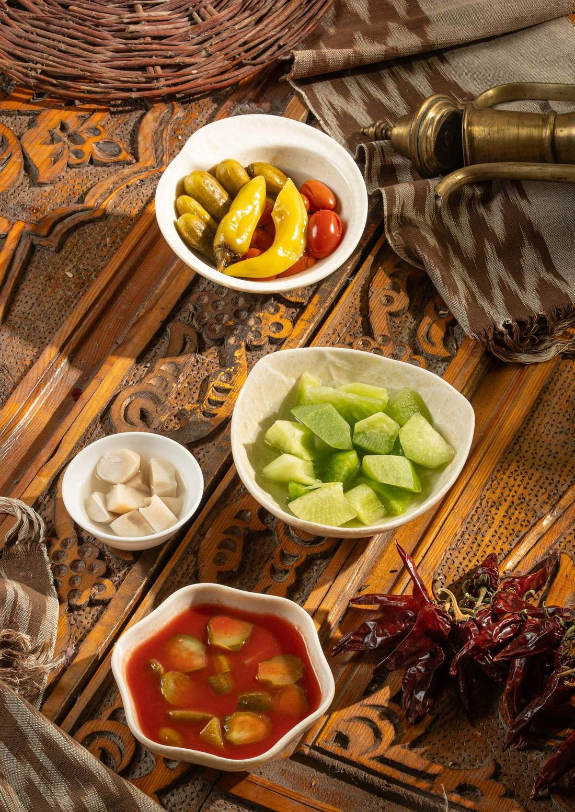
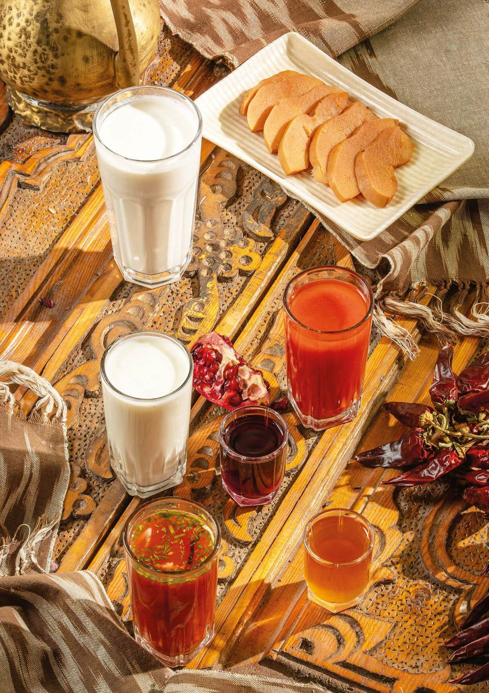
Cooked and sliced.
12 000 UZSSour yoghurt.
12 000 / 36 000 UZSFreshly squeezed.
10 000 UZSCooked and sliced.
8 000 UZSFreshly squeezed.
10 000 UZSYour grape juice, also rich in vitamins.
10 000 UZSRich in vitamins.
3 000 UZS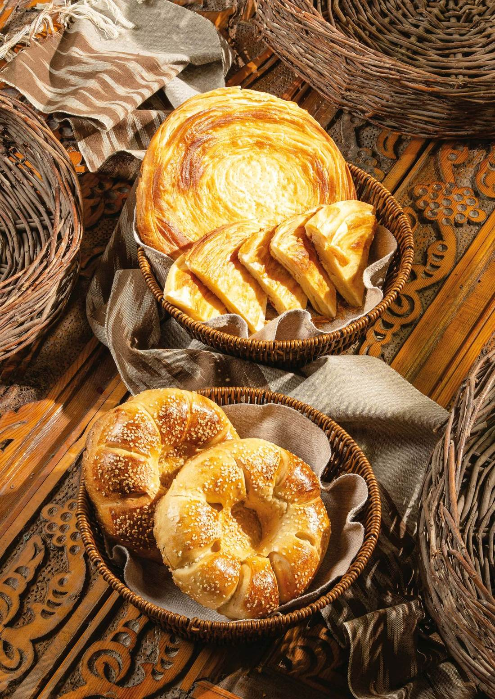
Flaky traditional layered bread with buttery texture.
14 000 / 7 000 UZSFreshly baked Uzbek non bread with a golden crust and soft center.
9 000 / 4 500 UZS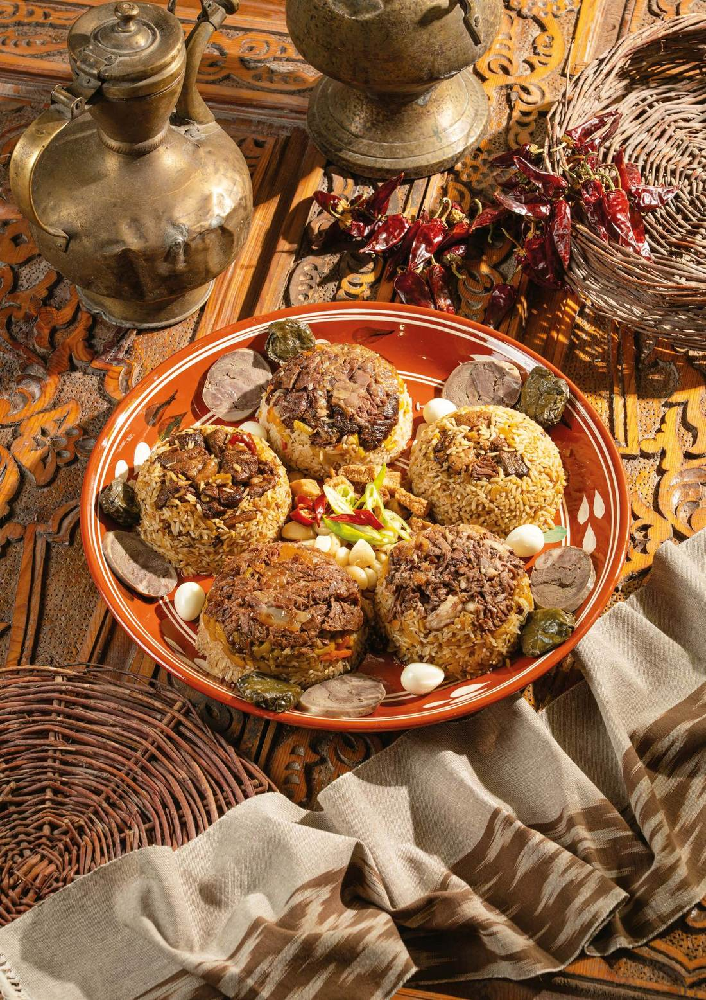
The ultimate experience for discovering Uzbek pilaf traditions. Includes five different regional styles of pilaf served with traditional delicacies: horse meat sausage, quail eggs, dolma, garlic, and pepper. Perfect for sharing and exploring the diversity of Uzbek cuisine.
Every regional pilaf below is available in two styles — Classic, or Complete with horse meat sausage (qazi), quail eggs, and dolma (stuffed vine leaves) — served as a small plate, a regular plate, or a full 1 kg cauldron portion.
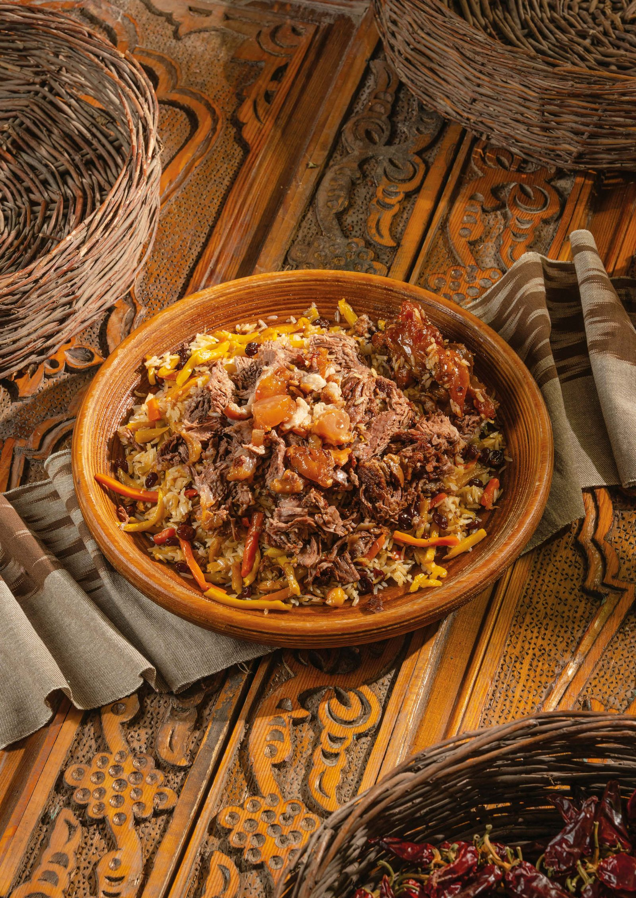
The most festive and ceremonial Uzbek pilaf, traditionally prepared for weddings and large celebrations. Cooked with tender beef, yellow carrots, aromatic rice, chickpeas, and raisins for a rich and balanced flavor — a true symbol of Uzbek hospitality.
| Classic | Complete | |
|---|---|---|
| Small plate | 51 000 | 68 000 |
| Regular plate | 53 000 | 70 000 |
| 1 kg | 345 000 | 464 000 |
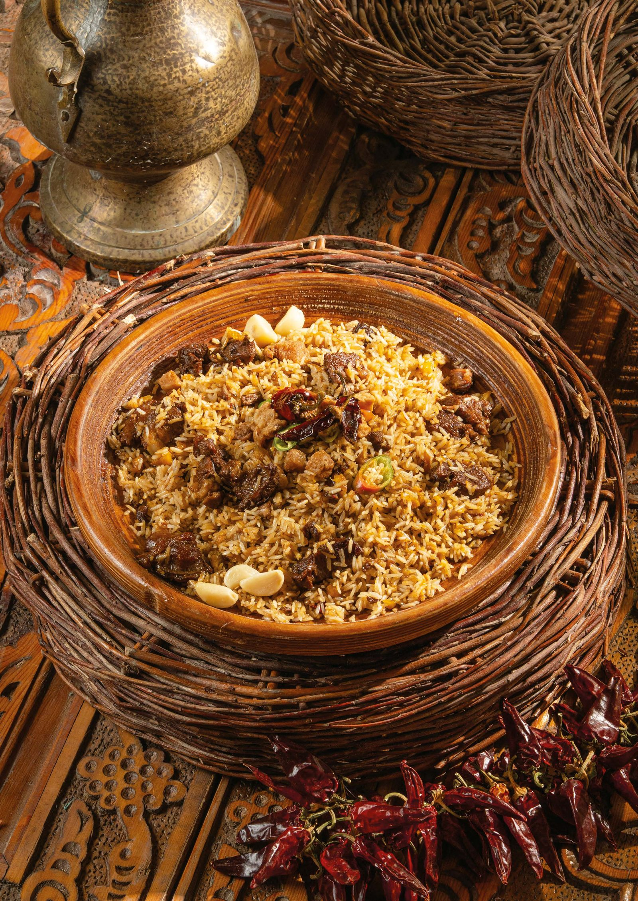
A bold teahouse-style pilaf with a slightly spicy character. Prepared with fragrant rice, beef, garlic, and aromatic spices for a deeper and richer taste — perfect for guests who enjoy stronger flavors.
| Classic | Complete | |
|---|---|---|
| Small plate | 51 000 | 68 000 |
| Regular plate | 53 000 | 70 000 |
| 1 kg | 345 000 | 464 000 |
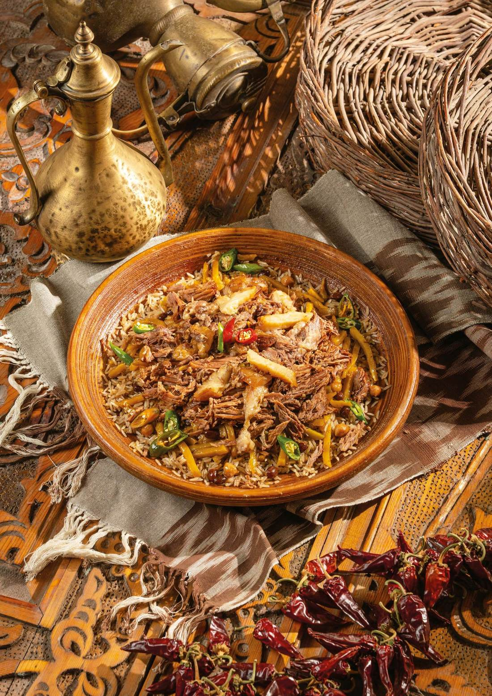
A legendary regional style from the ancient city of Samarkand. Ingredients are layered separately instead of mixed, creating a lighter and more elegant taste where every ingredient keeps its own texture — balanced, refined, and authentic.
| Classic | Complete | |
|---|---|---|
| Small plate | 51 000 | 68 000 |
| Regular plate | 53 000 | 70 000 |
| 1 kg | 345 000 | 464 000 |
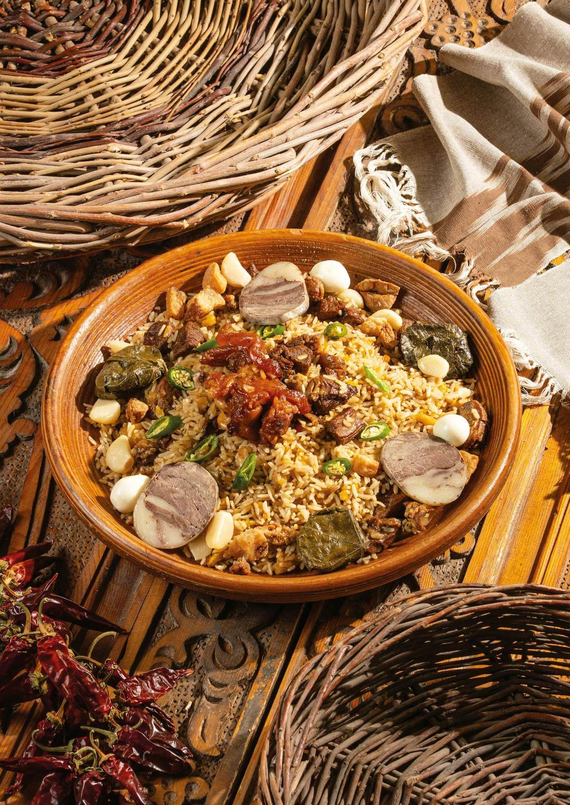
Prepared with premium Chongara rice, famous for its fluffy texture and ability to absorb rich flavors. This pilaf offers a softer, more delicate finish compared to classic varieties — a favorite among true pilaf lovers.
| Classic | Complete | |
|---|---|---|
| Small plate | 53 000 | 70 000 |
| Regular plate | 56 000 | 73 000 |
| 1 kg | 448 000 | 567 000 |
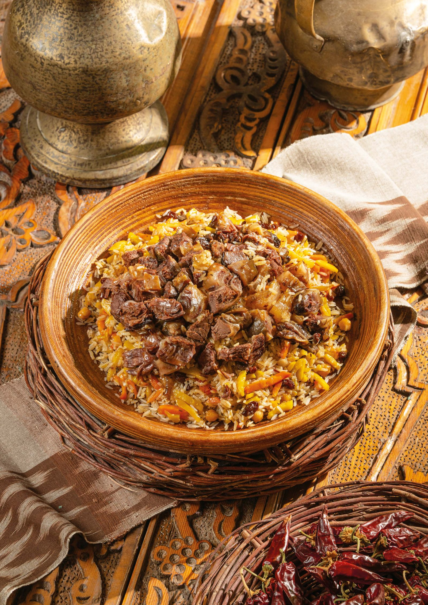
A unique style of traditional Uzbek pilaf, prepared using a special cooking method that differs from other types of osh. A distinctive technique creates a deeper aroma, richer flavor, and exceptionally tender texture — a truly authentic homemade taste of Uzbekistan.
| Classic | Complete | |
|---|---|---|
| Small plate | 51 000 | 68 000 |
| Regular plate | 53 000 | 70 000 |
| 1 kg | 345 000 | 464 000 |
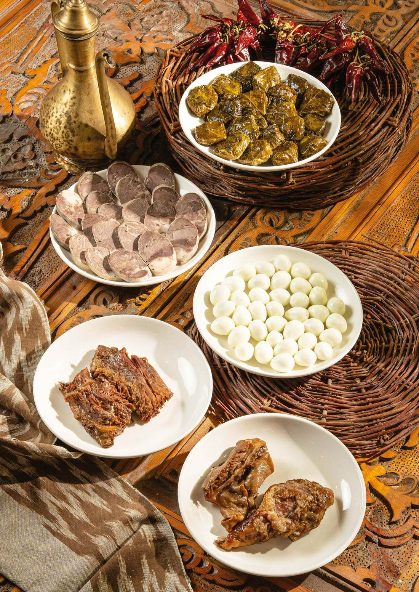
Grape leaves stuffed with seasoned minced meat and rice.
3 000 UZSTraditional garnish served with festive Uzbek pilaf.
2 000 UZSTraditional Uzbek horse meat sausage with rich flavor and delicate spices.
12 000 UZSAdditional slow-cooked beef portion.
30 000 UZSCooked in traditional style.
25 000 UZS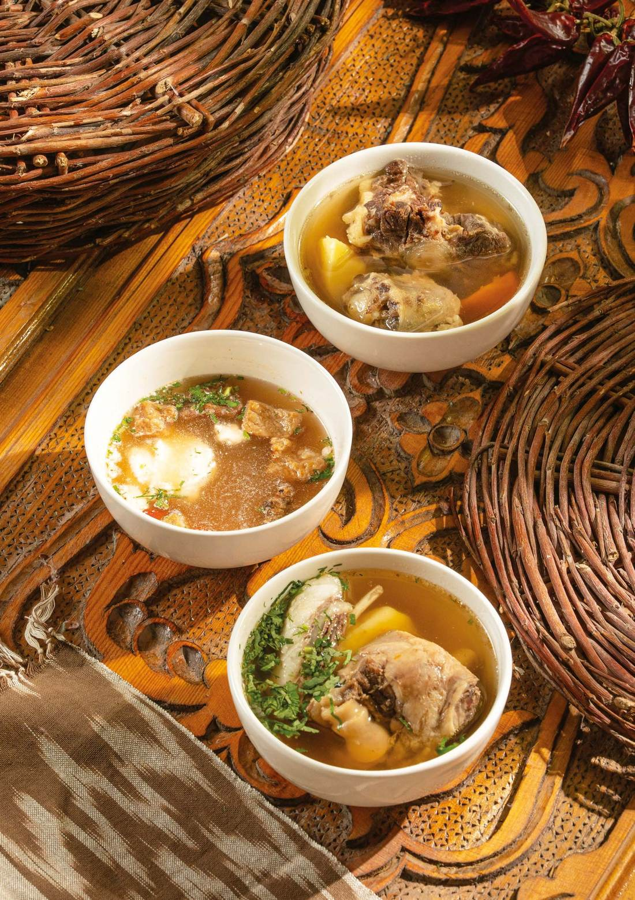
Rich slow-cooked soup with tender oxtail meat, potatoes, and aromatic broth. Deeply comforting and flavorful.
56 000 UZSA bold and spicy Uzbek soup with lamb fat, pepper, suzma, and rich broth.
12 000 UZSTraditional Uzbek soup with slow-cooked meat, vegetables, and rich marrow broth.
55 000 UZSClassic Uzbek rice soup with meat, carrots, herbs, and yogurt. Comforting and homemade.
33 000 / 35 000 UZSSmall handmade dumplings served in aromatic broth with sour cream.
35 000 UZSTraditional slow-cooked beef stew known for its rich texture and nourishing qualities.
45 000 UZSTraditional Uzbek dish made with mung beans, rice, and tender meat. Hearty and nutritious.
53 000 / 55 000 UZSSlow-cooked wheat, beef, and peas blended into a rich and velvety traditional dish.
55 000 UZS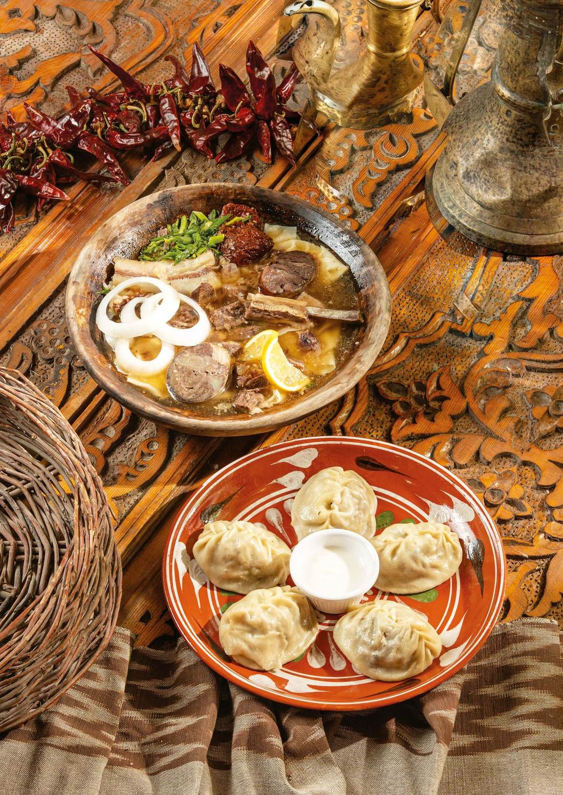
One of the most iconic dishes of nomadic Central Asian culture. Tender horse meat served over handmade flat noodles with onion sauce. Traditionally shared among family and guests.
95 000 UZSLarge handmade steamed dumplings filled with juicy meat, onion, and potato. Soft, delicate, and deeply satisfying.
12 000 UZS (1 pc)